Murmur records your calls and transcribes them on-device. Run AI locally, or explicitly opt into redacted cloud AI; your meeting archive stays on your Mac.
Signed & notarized · macOS 13.4+ · Apple Silicon & Intel · your notes stay Markdown you own
One local-first pipeline turns a live call into searchable memory. Transcription stays on your Mac; AI can run locally or, with explicit consent, use redacted cloud processing.
Your mic and the other side's system audio, captured and transcribed separately, then merged into a clean Me / Others transcript by on-device Whisper.
A reasoning model runs locally over a semantic index of everything you've recorded — writing a structured note and keeping the memory searchable forever.
Say a wake phrase mid-meeting and get a grounded answer with sources — or ask across months of calls afterward. The recording never stops.
Murmur is designed so transcription, search, and local AI can run without a network at all. If you choose cloud AI, consent and a redaction firewall sit in front of that egress.
With the bundled on-device model or Ollama, your audio and transcripts never touch a network. The reasoning happens on your Mac.
The whole database is SQLCipher-encrypted. On top, a per-folder AES-256-GCM lock adds content keys wrapped by a master key released only by Touch ID.
A sealed, locked folder leaks nothing — across the app, search, the graph, MCP, even the audio path. Locked meetings simply show as 🔒 Locked.
Murmur proves the ciphertext decrypts back before it ever blanks the plaintext — content is never lost, and locking is fully reversible.
A watcher can auto-relock sealed folders and wipe the cached key the moment screen sharing is detected — so a shared screen can't spill private notes.
If you ever opt into a cloud summarizer, emails, phone and card-like numbers are scrubbed first — and cloud egress is fail-closed behind a one-time consent.
| Brain / provider | Where it runs | Does meeting text leave your Mac? |
|---|---|---|
| On-device brain (Bielik / Qwen) | Fully local | No |
| Ollama | Fully local | No |
| Claude Code (default summarizer) | Local CLI → cloud | Only after consent; redaction firewall applied |
| Codex (OpenAI's CLI, run tool-free) | Local CLI → cloud | Only after consent; redaction firewall applied |
| Anthropic API (bring your own key) | Direct HTTPS | Only after consent; redaction firewall applied |
| AI Gateway (any OpenAI-compatible endpoint — LiteLLM, Kong, Portkey, vLLM…) | Direct HTTPS | Only after consent; redaction firewall applied |
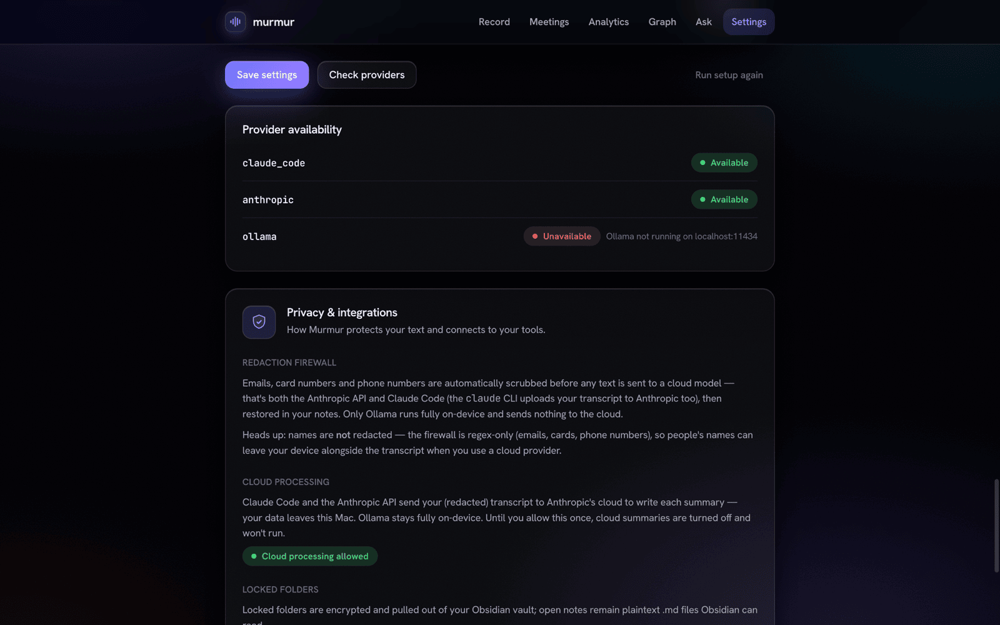
One encrypted store, three ways to use it — the app, a local MCP server, and your exported Markdown files.
2.0 rebuilt the shell around a single tree, added composable boards on top of it, and opened an offline import path for the notes you already have somewhere else.
The separate Meetings and Notes folder trees are gone. There's now a single tree — Workspaces › folders › your recordings and notes — in one sidebar that collapses to a rail when you want the room. Lock a workspace and everything inside it is sealed with it.
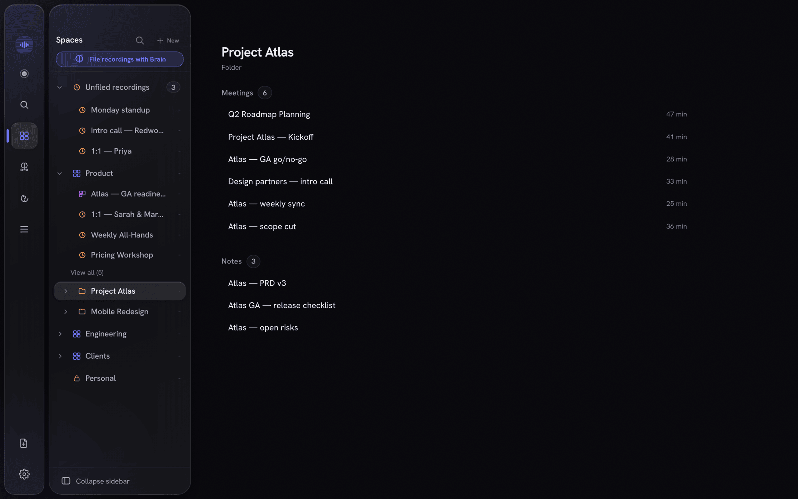
Pull notes, recordings, documents, people, promise ledgers and reminders onto a board, then read it through Brief / Overview / Commitments / Sources / People lenses. Pin a living answer — a question the app keeps up to date, and withholds the moment its sources stop being readable. You can ask a board directly, grounded only in what's on it.
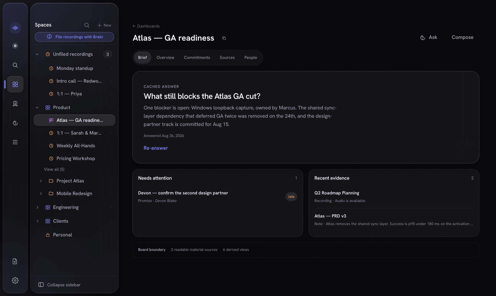
Settings → Imports pulls in a Notion export, an Obsidian vault, or Apple Notes. Entirely offline — no account, no key, no network call. Every import is a dry run first, so you see what it would write before it writes anything. (Apple Notes asks macOS for permission the first time.)
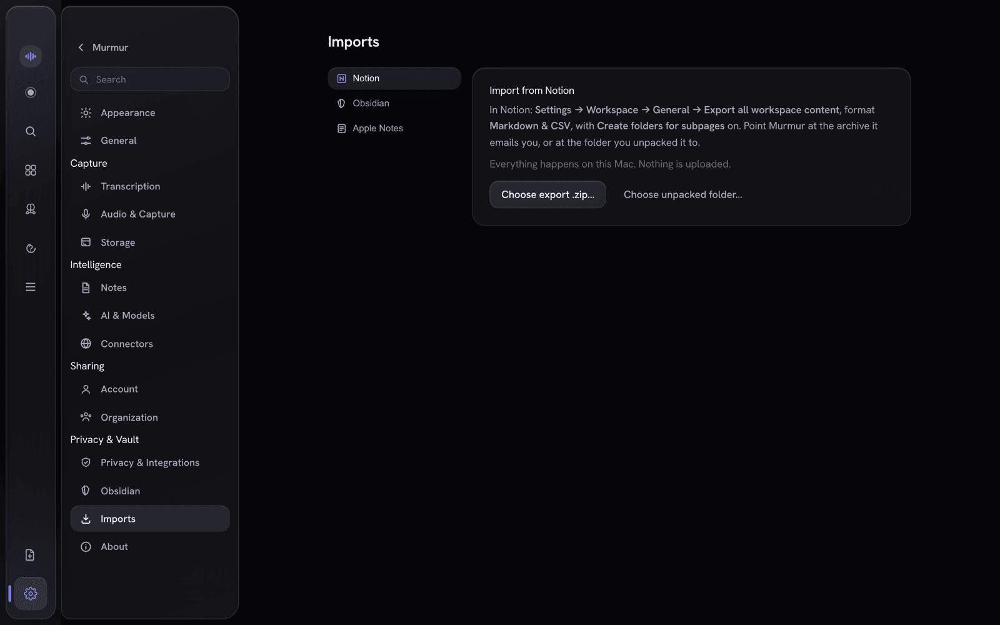
This is the part most note-takers don't have. Trigger it by wake phrase or a single tap; it answers out of your meeting memory, live, with citations you can open — and the recording never stops.
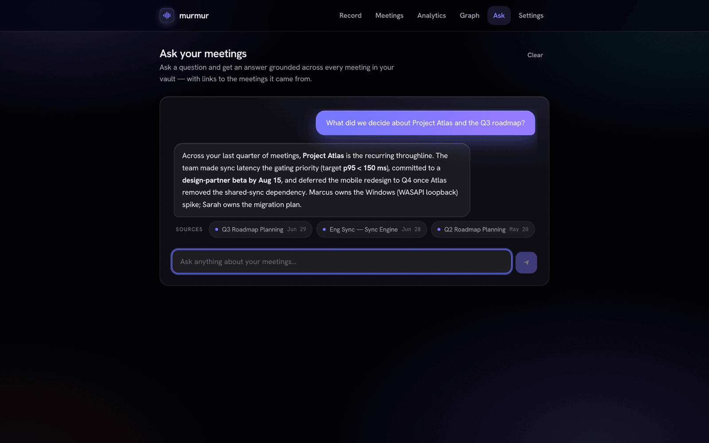
Dual-stream recording captures your mic and the other side's system audio, transcribes each independently on-device, and merges them by wall-clock into a clean Me / Others transcript with live captions as you speak.
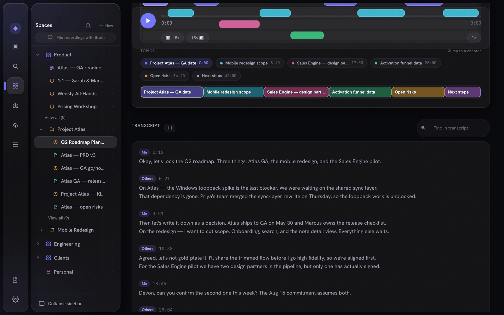
Every call becomes a clean note — summary, decisions, action items, quotes. Recordings and notes live side by side in the same workspace. People and projects are extracted automatically into a knowledge graph, and sealed Spaces stay hidden from it.
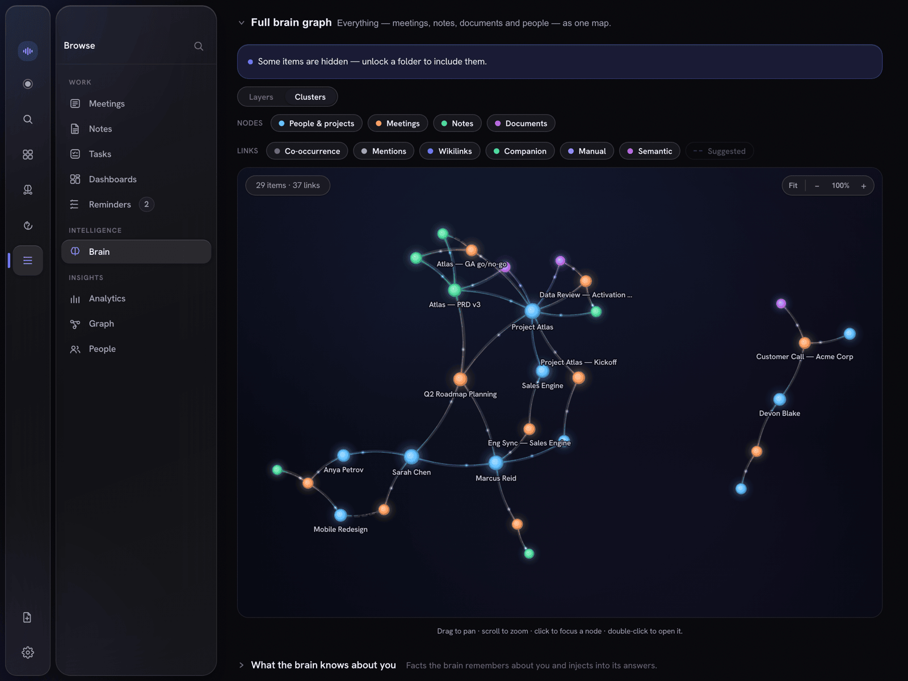
Murmur's notes don't ask you to trust them. Each line that's grounded in what was actually said carries a receipt — click it to jump straight to that second of audio, with the speaker and confidence. Paraphrased or unsupported lines get none, so you can see at a glance what's verified.
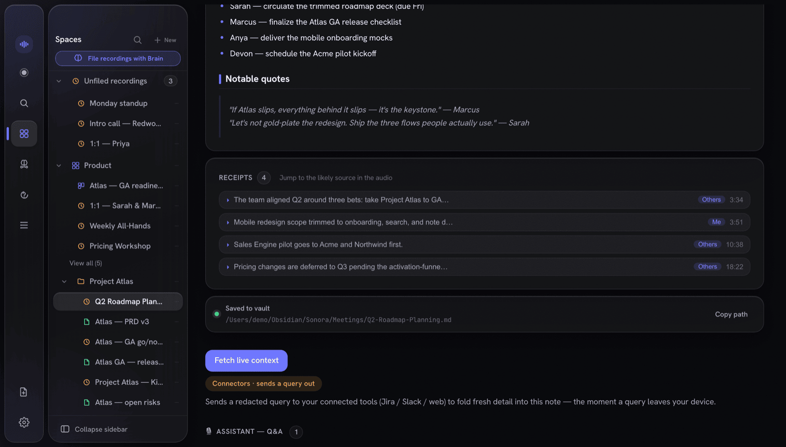
Every note is also exported as atomic Markdown — YAML front-matter, [[wikilinks]], block deep-links, and a canvas board option. They're just plain files you own, openable in any editor.
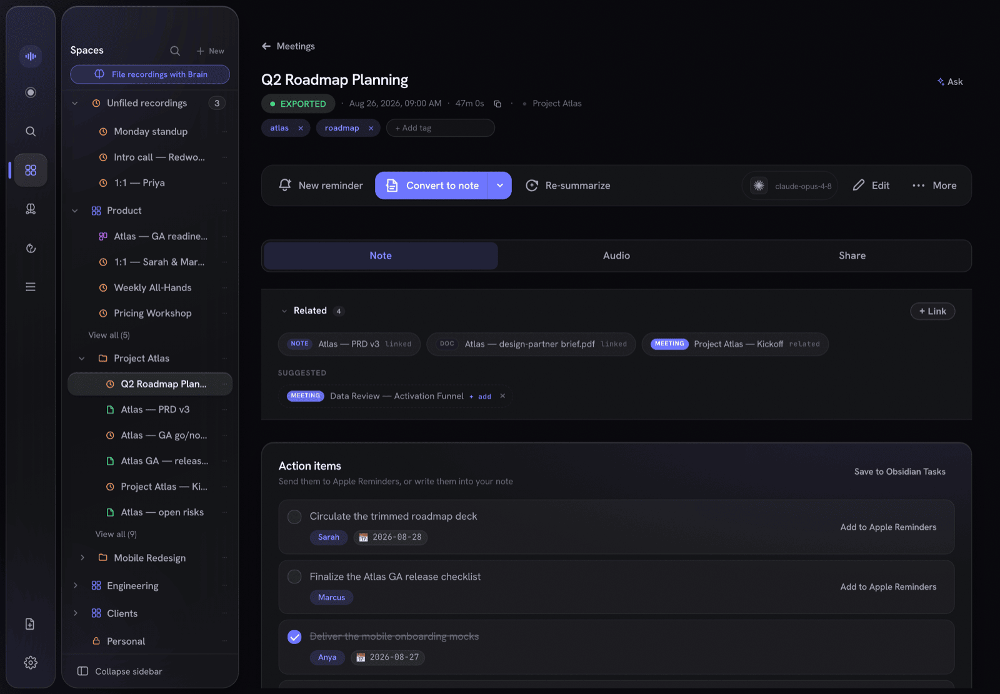
A full Markdown editor with tags and properties, filed in the same workspaces as your recordings — for anything you write, not just what Murmur transcribes. Select any passage and a command menu appears: refine, shorten, change tone, translate, fact-check, or just type what you want done.
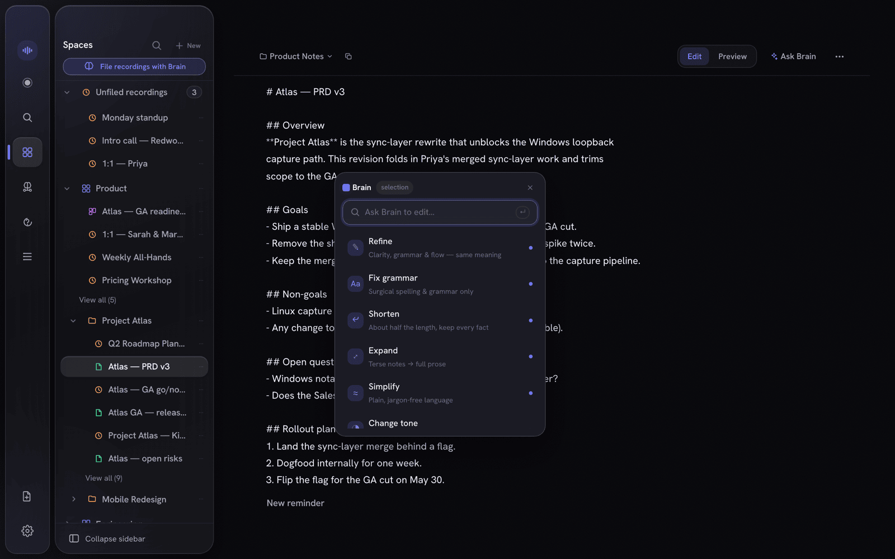
Publish a note or meeting summary into your org's Shared Brain and it stays in sync for every member as you edit. Everything is sealed on your Mac before it ever leaves — the server only ever stores ciphertext, wrapped keys, and public keys.
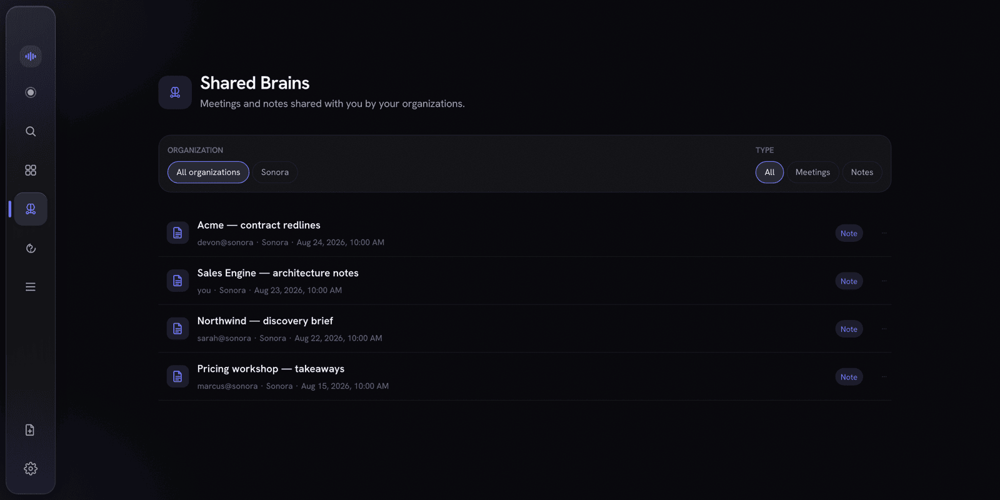
Local recording, transcription, notes, and Markdown exports need no account or payment. Pricing and availability beyond early access will be announced separately.
Local recording, transcription, notes, and exports.
Pricing and availability to be announced.
Pricing and availability to be announced.
Pricing and availability beyond early access will be announced separately.
Local-first for macOS. Keep AI local, or explicitly opt into redacted cloud AI when you choose.